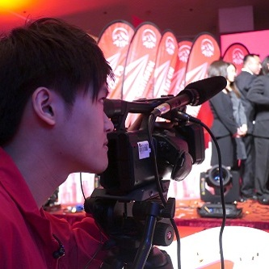
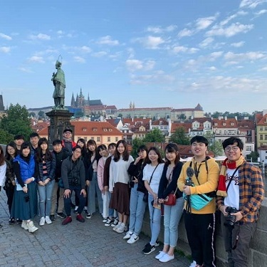
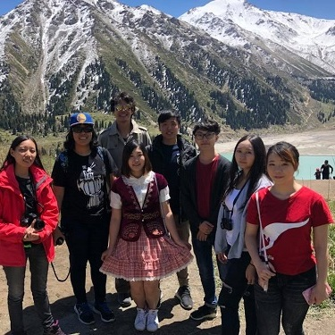

Associate of Science in Creative and Interactive Media Production The programme aims to develop students' creativity, aesthetics and innovative use of media, provide students with appropriate knowledge and skills in the development of interactive media systems and media production process.


Upon successful completion of this programme, students will be able to: Relate creativity, aesthetics and media technology to areas of media design and production; Apply media and information methodologies, both independently and within a team, to develop interactive multimedia systems and enhance the levels of quality in production process;

